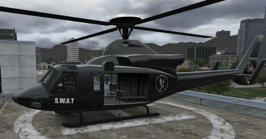
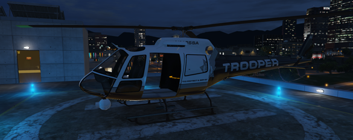
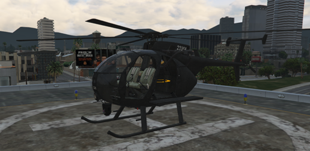

SASP
Air Support Division
Air Support Division
Les engins actuellement utilisés par l'Air Support Division.

Hélicoptère lourd destiné aux opérations spéciales. Utilisation exclusivement sur autorisation SWAT ou du Commandement.
Statut : Autorisation SWAT uniquement.

Hélicoptère principal de l'Air Support Division. Utilisé pour les patrouilles aériennes, recherches, surveillance et soutien des unités au sol.
Statut : Service opérationnel.

Appareil réservé aux interventions tactiques à haut risque. Déploiement uniquement sur demande du SWAT.
Statut : Autorisation SWAT uniquement.